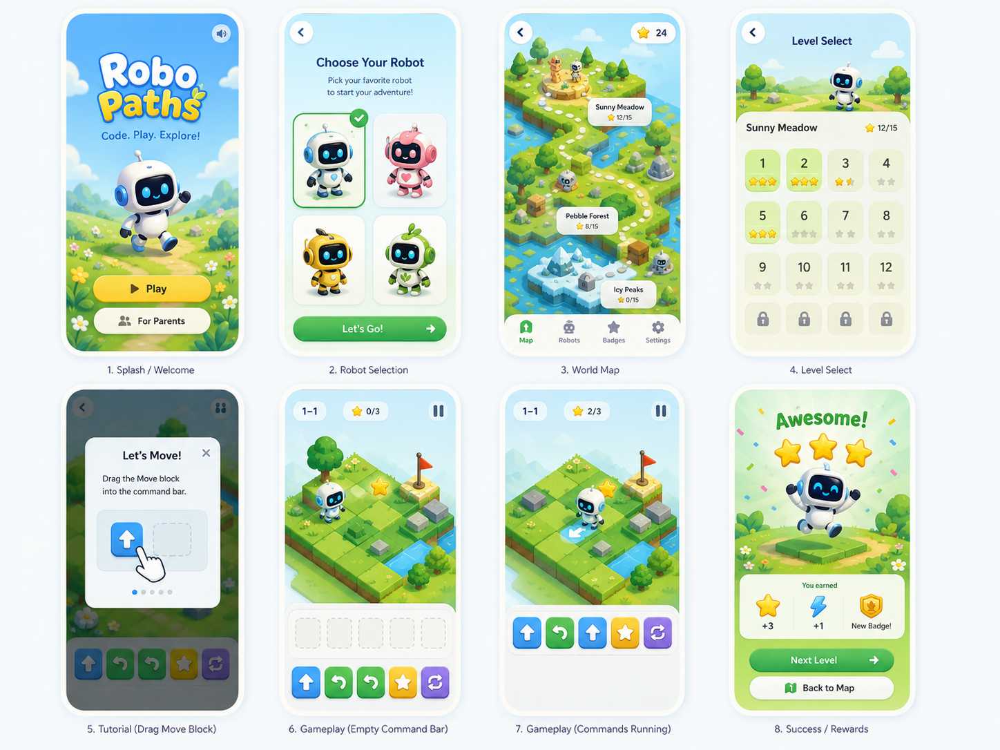
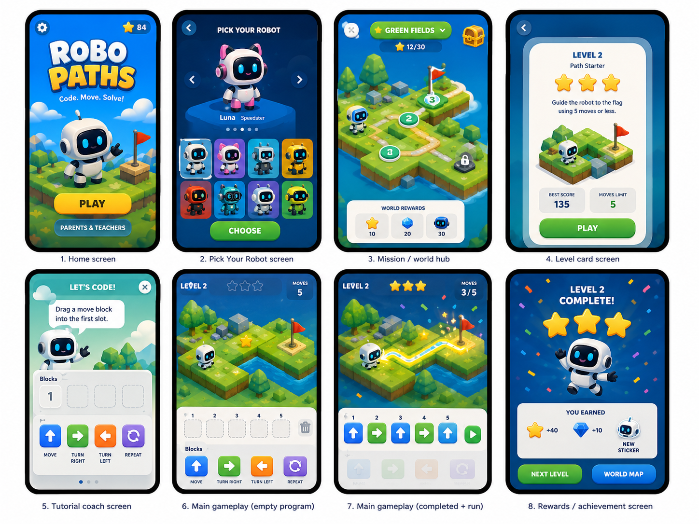
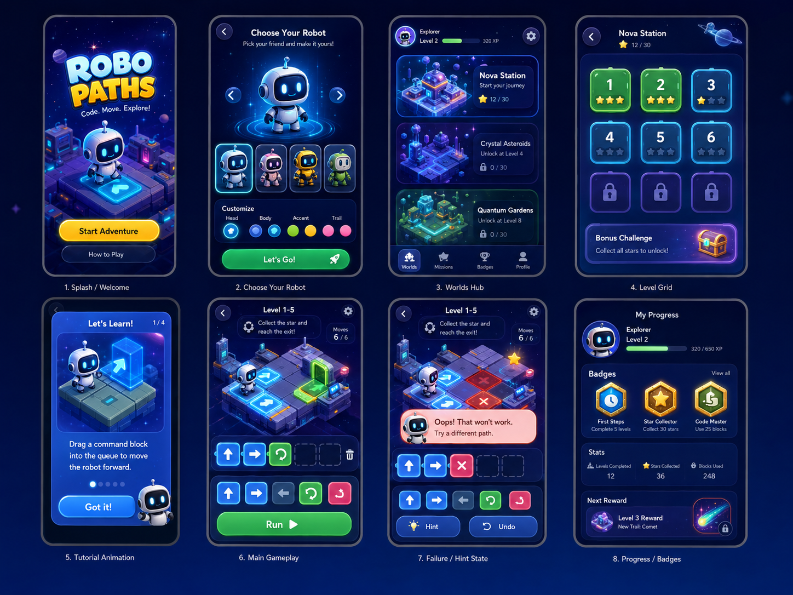
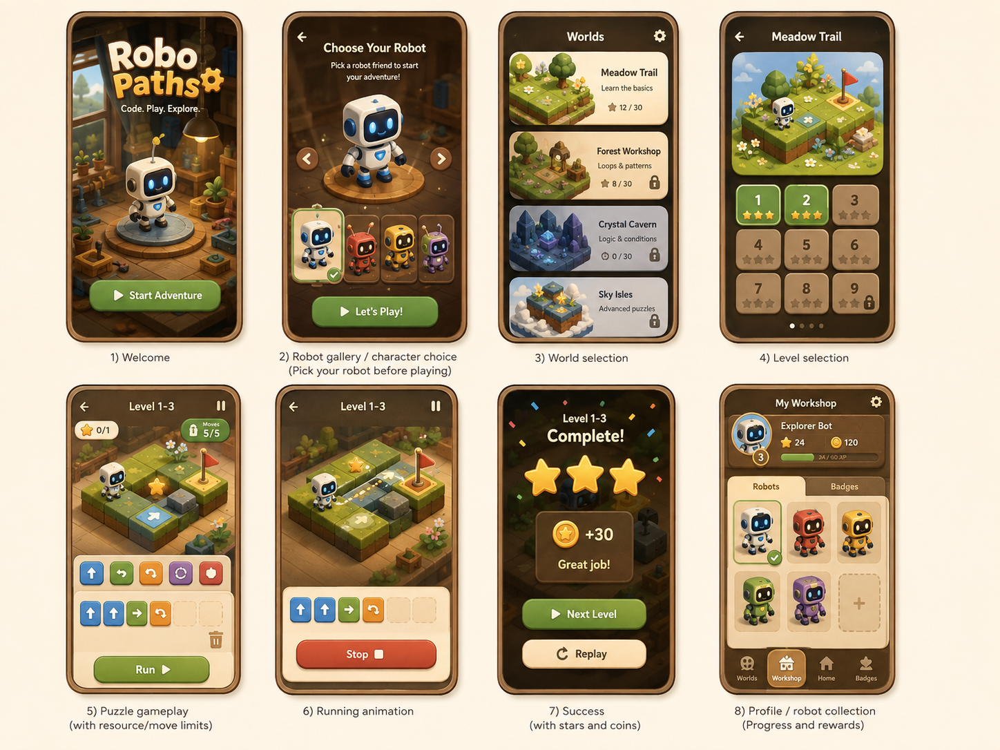
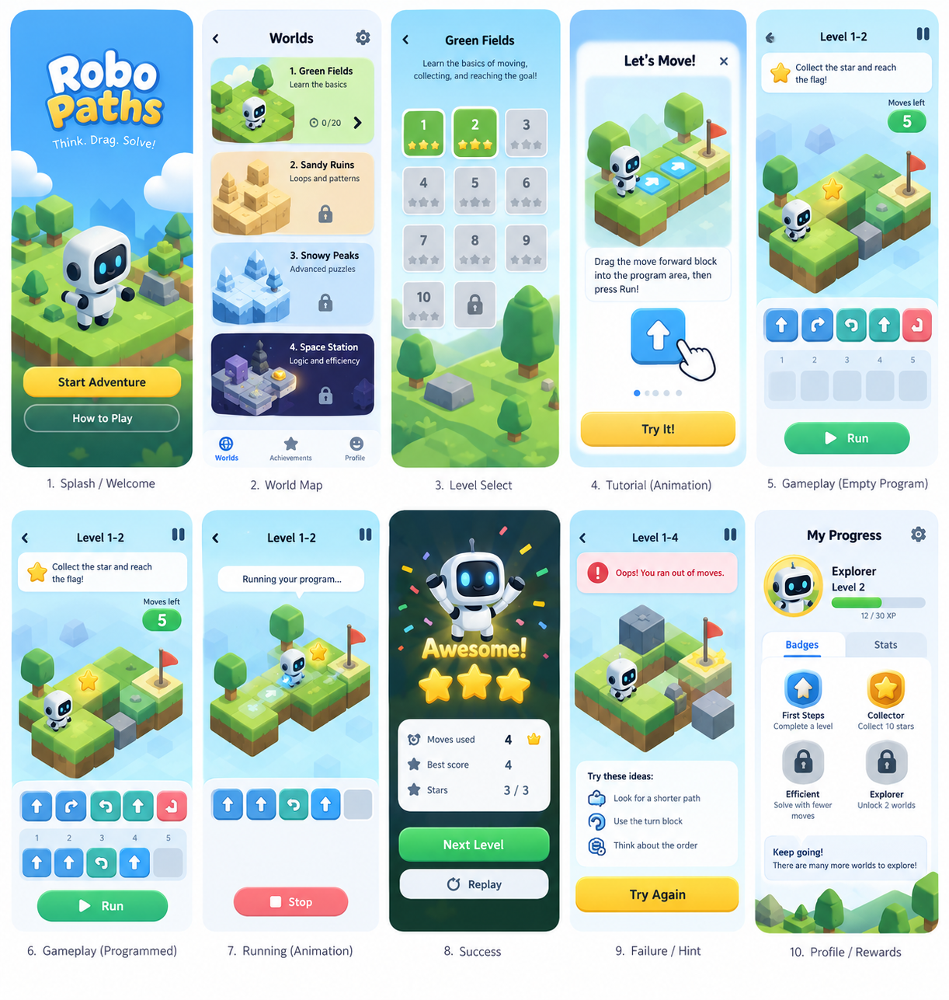

Bright Meadow
Proposed working default; four starter robots and an airy mobile game flow.

Bold Blue
Alternative with bolder contrast and a larger robot gallery. Currency/ability labels are not v1 requirements.

Neon Space
Alternative dark space direction, including a useful retry-state reference.

Cozy Workshop
Alternative warm wooden workshop direction; coins/XP are not v1 mechanics.

Original flow study
Earlier ten-screen exploration with tutorial, editing, playback, success, retry and rewards.

Bright Meadow screen excerpts